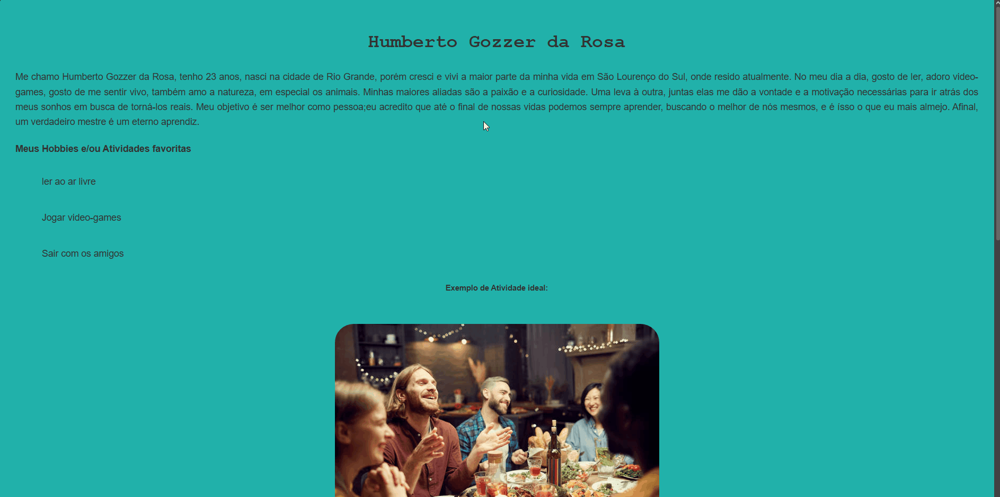

Sobre Mim
Me chamo Humberto Gozzer da Rosa, tenho 24 anos e sou um Desenvolvedor em formação e entusiasta de tecnologia. No curso de Análise de Desenvolvimento de Sistemas, valorizo o código limpo, a organização técnica, a acessibilidade e a busca por mais conhecimento. Gosto de aprender mais sobre tecnologias seja Software ou seja Hardware a complexidade me fascina e me instiga por mais.
Formação
Análise e Desenvolvimento de Sistemas
UNINTER | Cursando (Graduação Tecnológica)
Desenvolvendo competências em lógica de programação, estruturas de dados e desenvolvimento de sistemas funcionais.
Idiomas
Inglês: Básico / Intermediário (Leitura técnica).
Ensino Médio
Completo
Meus Projetos

Fundamentos de Desenvolvimento de Software
Este projeto representa o marco inicial da minha trajetória em ADS, servindo como base prática para a consolidação de conceitos essencias HTML, CSS e JVScript. A página foi desenvolvida com o foco na compreensão da estrutura de tecnologias Front-end. Além do desenvolvimento técnico da interface, este trabalho marcou meu primeiro contato com o fluxo de trabalho profissional, utilizando GitHub para o versionamento do código e para a disponibilização(deploy) da aplicação em ambiente real.

Segurança para MEI
Landing page interativa sobre cibersegurança focada em microempreendedores. Esta foi minha primeira Atividade Extensionista, onde o objetivo central foi a inclusão digital. Aqui busquei ser o mais objetivo e simples possivel para que até mesmo uma pessoa de idade avançada ou com pouca familiariedade tecnologica conseguisse entender sem complicações e em um curto periodo de tempo. No conteudo aprofundei meus estudos sobre o assunto, unindo conhecimentos prévios adquiridos através de documentários que se provaram de grande ajuda para o enriquecer o conteudo da página. No desenvolvimento do código priorizei padrões de acessibilidade para garantir que a interface fosse inclusiva para todos os usuários, obtendo um resultado sólido tanto em usabilidade quanto em desempenho.